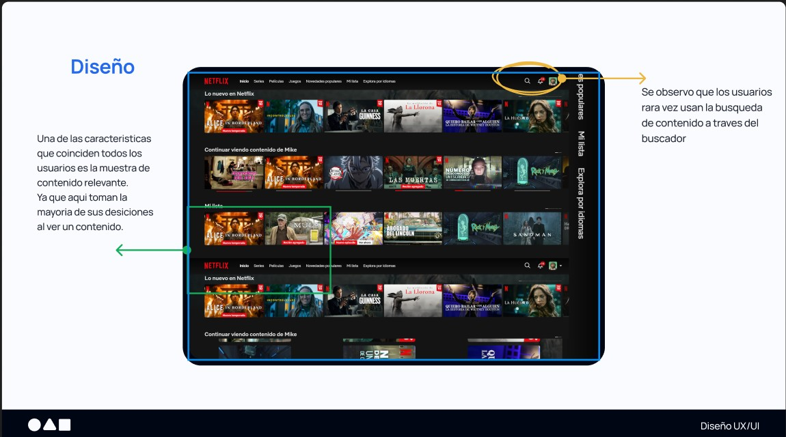
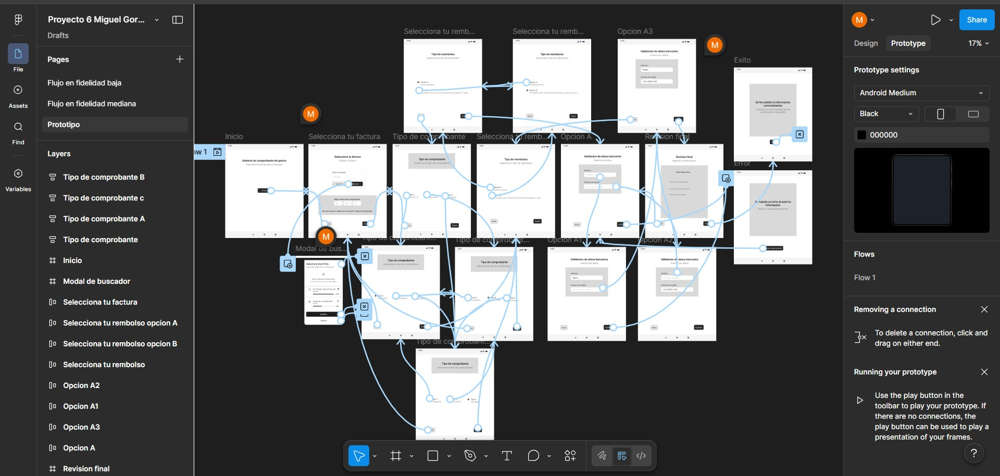
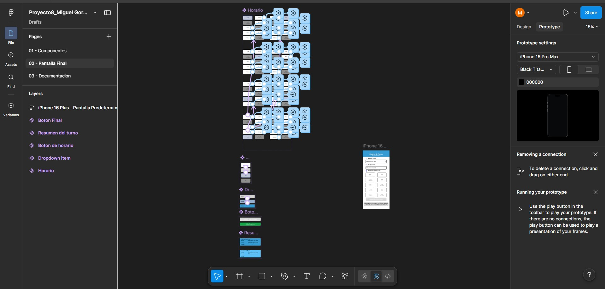

I design intuitive digital experiences using research, usability testing, and iterative prototyping. My work focuses on understanding real user problems and transforming insights into clear design solutions.
View Selected Work LinkedIn
Conducted user interviews and built a structured research brief to identify user pain points and behavioral patterns.

Designed user flows and iterative wireframes, progressing from low‑fidelity sketches to interactive prototypes in Figma.

Created a scalable component system based on atomic design principles to ensure consistency across interfaces.
I am a UX/UI designer in training focused on creating intuitive and user-centered digital experiences. My approach combines research, usability testing, and iterative design to understand real user problems and transform insights into clear and functional solutions. I enjoy exploring how people interact with technology and improving those experiences through thoughtful design. Currently, I continue developing my skills in UX research, wireframing, and prototyping using tools such as Figma.
Open to UX/UI design opportunities, collaborations, and freelance projects.
Send Email